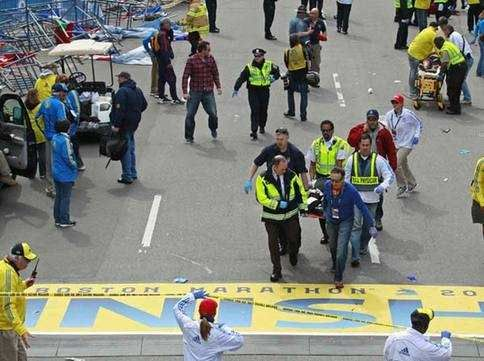

返回主页
没有终点的马拉松（Marathon）

马拉松（Marathon）战役是公元前490年强大的波斯帝国对雅典发动的战争。雅典方面参战的一万一千人全部是重装步兵，他们按照惯例在马拉松平原的西侧排出八行纵深的密集方阵。此时正值雨季，马拉松平原只有中间地势较高，两边都是泥沼地，雅典利用地形靠智谋获得了胜利。波斯军队共阵亡6400人，雅典方面仅仅阵亡192人。马拉松之战以后，雅典在希腊半岛威名远扬，成为希腊联盟的盟主。
马拉松战役中希腊人打败了波斯军队，希腊指挥官派一名使者费里皮德斯（Pheilippides）由马拉松平原跑回雅典报捷，全程约42.195公里，途中从未停顿。当费里皮德斯回到雅典，只说了一句：“我们胜利了！”后，就倒了下去，当即死去。为了纪念这位英雄，希腊人在1896年举行了第一次马拉松赛跑大会，后来马拉松长跑项目称为奥运会上固定比赛项目。
爱国日，又名爱国者日，是列星顿和康科德战役的纪念日，美国麻省每年4月第三个星期一庆祝。它是美国独立战争纪念日，是日当地举行波士顿马拉松赛。
version:1.0; jobnet@188.com © retter2012.com